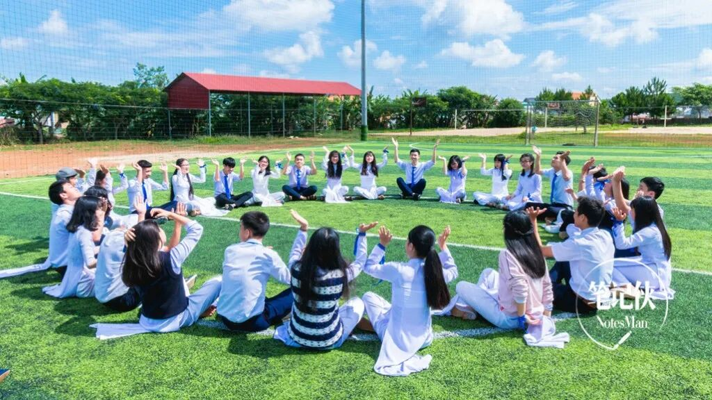
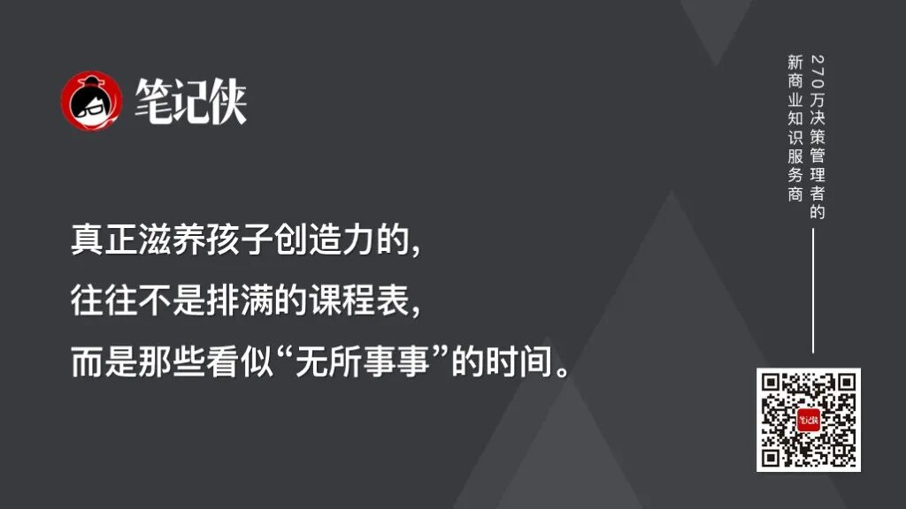
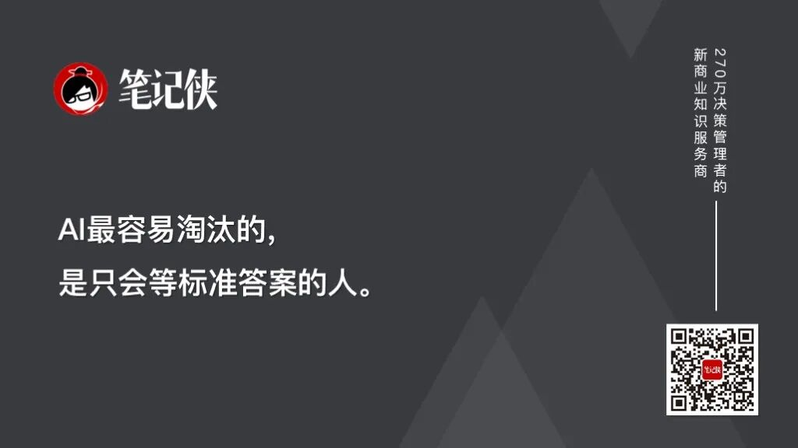
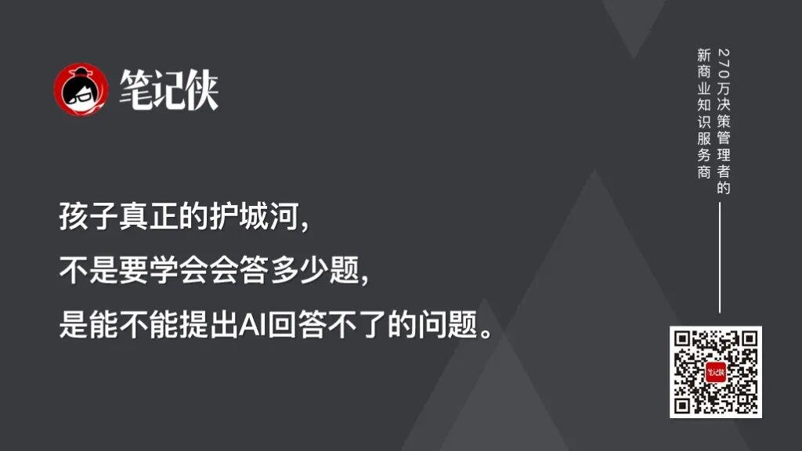

💡 废掉一个孩子最快的方式：逼他死记硬背
Rote memorization as the fastest way to hold children back in the AI era

笔记侠（Notesman）。
你还在逼孩子背古诗、刷奥数、默写英语单词？
这些东西clay[kleɪ] n. [土壤] 粘土；泥土；肉体；似黏土的东西，AI做得比孩子好一万倍。
早在2023年3月，GPT-4就以超越90%考生的成绩通过approve[əˈpruv] v. 批准，通过；(of)赞成，赞许，同意了美国律师资格考试（Bar Exam）。
这不叫碾压，什么叫碾压？而且，它顺便还把美国执业医师考试、沃顿商学院MBA考试、注册会计师accountant[əˈkaʊntənt] n. 会计人员，会计师考试……这些公认最难啃的骨头，全给啃下来了。
这意味着spell[spɛl] v. 拼，拼写；意味着；招致；拼成；迷住；轮值什么？扎心一点epoch[ˈɛpək] n. [地质] 世；新纪元；新时代；时间上的一点说，你花20年让孩子死记硬背的那点知识，AI一秒钟就能检索完毕。
当专业知识不再是稀缺资源时，我们还在用「知识囤积」的方式alike[əˈlaɪk] adv. 以同样的方式；类似于培养下一代，这不是勤奋，这是彻头彻尾的战略失误。
在AI时代，对孩子「放养」，可能才是真正高明的crack[kræk] adj. 最好的；高明的打法。
一、知识垄断monopoly[məˈnɑpəli] n. 垄断；独占；专营已死：
AI就是那本终极“百科全书encyclopaedia[ɪnˌsaɪkləˈpidiə] n. 百科全书”
先别急着反驳contradict[ˌkɑntrəˈdɪkt] v. 反驳；同…矛盾,同…抵触，我们来正视一个事实：
在知识获取这条赛道上，人类已经输了，而且输得非常deadly[ˈdɛdli] adv. 非常；如死一般地彻底。
加拿大工程院院士、南方科技大学的孟庆虎教授，在一个教育educate[ˈɛʤəˌkeɪt] v. 教育,培养,训练大会上说了句大实话：
“知识点死记硬背的学习方法avenue[ˈævəˌnu] n. 大街；林荫路；途径，渠道，方法，已经完全过时。人工智能可以高效完成所有规律化、标准化normalization[ˌnɔrməlɪˈzeɪʃən] n. 正常化；标准化；正规化；常态化的知识处理工作。”
他在南科大做了件什么事儿呢？给一年级学生junior[ˈʤunjər] n. 年少者，晚辈；地位较低者；大学三年级学生开了一门“不用写代码的编程课”。为什么？因为写代码这种规律性的低级劳动，AI已经能高效完成accomplish[əˈkɑmplɪʃ] v. 完成；实现；达到了。
未来的教育，应该聚焦在培养学生驾驭AI、整合资源为己所用的核心能力capability[ˌkeɪpəˈbɪləti] n. 能力上。
这不是未来学家的预言，这是正在发生contemporary[kənˈtɛmpərˌɛri] adj. 现代的,当代的；发生[存在]于同一时代的的现实：
ChatGPT-3.5就已经能通过美国医学执照certificate[sərˈtɪfɪkət] n. 证(明)书,执照考试了；
GPT-4更狠，直接拿下了公认最难的注册会计师考试examine[ɪgˈzæmɪn] v. 检查；调查； 检测；考试。
谷歌三级软件工程师面试，年薪18.3万美元的岗位，它也一样搞定。
你看，当AI都能通过所有专业考试mock[mɑk] n. 英国模拟考试（mocks）了，你逼孩子拼命刷题的意义在哪儿？就是为了培养出一个比AI慢一万倍、还时不时出点小错的“知识容器bin[bɪn] n. 箱子，容器；二进制”吗？
二、芬兰和蒙台梭利，
其实早就告诉inform[ˌɪnˈfɔrm] v. (of,about)通知,告诉,报告了我们答案
有意思的是，在AI还没爆发burst[bərst] v. 爆发，突发；爆炸的年代，“放养式教育”就已经赢了。我给你讲两个“反内卷”的经典案例。
案例一：芬兰——作业assignment[əˈsaɪnmənt] n. 任务；作业最少，成绩却数一数二
芬兰的孩子每天花在作业上的时间不到1小时，而在玩耍和兴趣上的时间超过exceed[ɪkˈsid] v. 超过,胜过；越出 (限制、规定)3小时。
结果consequence[ˈkɑnsəkwəns] n. 结果,后果,影响呢？芬兰学生在PISA（国际学生评估appraisal[əˈpreɪzəl] n. 对...作出的评价；评价，鉴定，评估项目）的阅读、数学、科学评比中，连续多年名列前茅，创新力和竞争力更是高居世界榜首。这个仅500多万人口的小国，大学教育普及generalize[ˈʤɛnərəˌlaɪz] v. (generalise)归纳,概括；推广,普及率极高。
你看，3小时knot[nɑt] n. （绳等的）结；节瘤，疙瘩；海里/小时（航速单位）对14小时，多出来的那11个小时，芬兰孩子用来干嘛？用来“浪费dissipate[ˈdɪsəˌpeɪt] v. 浪费；使…消散时间”。
而恰恰是这种看似浪费的时间，成了激发创造coin[kɔɪn] v. 铸造（货币）；杜撰，创造力和独立思考的土壤。

芬兰教育部长的回答简洁compact[ˈkɑmpækt] v. 使简洁；使紧密结合到令人震撼：秘诀就是没有家庭作业。孩子们应该有更多时间去成为孩子，去和朋友玩耍，去陪伴accompany[əˈkəmpəni] v. 陪伴，陪同,伴随；伴奏家人，去做运动，去听听音乐，读读书。
案例二：蒙台梭利——自主选择elect[ɪˈlɛkt] v. 选举,推选；选择,作出选择，自主成长
蒙台梭利教育的核心理念是“以儿童为中心”：不是老师灌输知识，而是给孩子一个精心设计的centigrade[ˈsɛntəˌgreɪd] adj. 摄氏温度计的;摄氏的环境，让他们自主选择、自主探索。
研究结果很明确：和接受acceptance[əkˈsɛptəns] n. 正式接受；接纳；接受，赞同，赞成，认可传统教育的孩子相比，接受蒙氏教育的孩子，在语言表达、团队合作以及后续学习方面，表现都更优越。他们在家更勤劳，在公共场合occasion[əˈkeɪʒən] n. 时机，机会；场合；理由更礼貌大方。
蒙台梭利教育的精髓，不是“不管”，而是提供“有准备formulate[ˈfɔːmjuleɪt] v. 规划；制定；准备；仔细思考并明确表达的环境”：
丰富的abundant[əˈbəndənt] adj. 丰富的；充裕的；盛产教具、自由的节奏、加上教师的观察和引导。
孩子拼图卡住了，老师不是直接告诉他怎么拼，而是用一个鼓励arouse[əraʊz] v. 引起；唤醒；鼓励的眼神，让他自己再试试。这种“做中学”，是让孩子在实践中理解absorb[əbˈzɔrb] v. 吸收；吸引；承受；理解；使…全神贯注知识，而不是单纯靠死记硬背。
三、AI时代，
“放养”为什么从“可选项”变成了“必选项”？
“放养”在工业时代，可能likelihood[ˈlaɪkliˌhʊd] n. 可能性，可能只是教育理念的一种浪漫选择；但到了Agent时代，它会是关乎生存的必须。原因有三。
原因一：AI替代substitute[ˈsəbstəˌtut] v. 替代的是“知识型人”，留下的都是“自主型人”
AI最擅长excel[ɪkˈsɛl] v. 超过；擅长什么？回答问题、检索信息、执行administer[ədˈmɪnɪstər] v. 管理；执行；给予标准化流程。你花十年让孩子变成一个“会回答问题的人athlete[ˈæθˌlit] n. 运动员，体育家；身强力壮的人”，但AI一秒钟能回答一百个问题。
那AI最不擅长什么？定义问题、跨界连接、感受情绪、在模糊地带belt[bɛlt] n. 带；腰带；地带做判断。
这些能力的培养cultivate[ˈkʌltɪveɪt] vt. 耕作， 栽培； 养殖；培养， 教养； 磨炼，恰恰需要“放养”，让孩子去自由探索、自主试错、自己去发现问题。
哈佛大学的李钧雷教授曾经问过ChatGPT一个问题：“人类humanity[juˈmænɪti] n. 人类；人性,人情；(pl.)人文科学学者能做的，而你永远做不到的是什么？”系统的systematic[ˌsɪstəˈmætɪk] adj. (al)系统的,有组织的回答是：“我没有身体，我无法感受……我们需要能感受的人类，因为我不能。”
感受力、判断力judgement[ˈʤəʤmənt] n. 意见；判断力；[法] 审判；评价、定义问题的能力，这些不是靠刷题刷出来的，是在自由的探索里生长出来的。
原因二：过度管控培养的是“标准criterion[kraɪˈtɪriən] n. (pl.criteria或s)标准，尺度答案思维”，而AI时代没有标准答案
传统教育的底层逻辑是：所有问题都有标准答案，你背下来descend[dɪˈsɛnd] v. 下降；下去；下来；遗传；屈尊就行。考试无非就是验证validate[ˈvælɪdeɪt] v. 验证你背得对不对。

但在AI时代，所有有标准答案的事anxiety[æŋˈzaɪəti] n. 焦虑；渴望；挂念；令人焦虑的事，AI全包了。
留给人类的，恰恰是那些没有标准答案的问题：这个方向值得探索explore[ɪkˈsplɔr] v. 探索；探测；探险吗？这个结果consequently[ˈkɑnsəkˌwɛntli] adv. 结果，因此，所以真的可信吗？在不确定ascertain[ˌæsərˈteɪn] v. 确定，查明，弄清的情况下，是该做A还是做B？
你看，定义问题的能力，根本上来自好奇心curiosity[ˌkjʊriˈɑsəti] n. 好奇心；古董,古玩。
好奇心不是被规划出来的，是在自由的环境里自发产生breed[brid] v. 繁殖；饲养；产生的。你把孩子的时间表排得密不透风，他连发个呆、走个神的sacred[ˈseɪkrɪd] adj. 神的；神圣的；宗教的；庄严的机会都没有，好奇心要从哪里长出来？
原因三：“圈养”出来的孩子，跟AI竞争没有任何差异化differentiation[ˌdɪfərenʃiˈeɪʃn] n. 差异化优势
只有差异discrepancy[dɪˈskrɛpənsi] n. 差异,不符化，才能产生溢价。
如果你的孩子和AI的能力高度重叠，都会答题、都懂知识、都能执行标准化任务，那对不起，你的孩子在就业市场上，就是AI的一个廉价替代品，而且还是劣势替代品，因为AI更快、更准、更便宜cheaper[ˈtʃiːpə] adj. 更便宜。

真正的authentic[əˈθɛnɪk] adj. 真正的，真实的；可信的差异化优势是什么？
是AI做不了的那些事：
提出一个新问题、感受他人的情绪、在高度altitude[ˈæltɪtjuːd] n. 高度， 海拔不确定中做决策、跨领域建立连接。
这些能力的培养路径，恰恰跟传统的classical[ˈklæsɪkəl] adj. 古典的；经典的；传统的；第一流的“圈养”式教育反着来。你需要给孩子留白，给他空间去无聊、去走点弯路、去犯点错、去发现自己真正感兴趣的东西disguise[dɪsˈgaɪz] n. 伪装；假装；用作伪装的东西。
四、放养不是放任abandon[əˈbændən] n. 放任；狂热：
给你三个可以落地的方法recipe[ˈrɛsəpi] n. 烹饪法,食谱；诀窍,方法论
说到这里，我必须澄清clarify[ˈklɛrəˌfaɪ] v. 澄清；阐明一下：放养绝不等于放任。放养，是给孩子足够的adequate[ˈædəkˌweɪt] adj. 充足的，足够的自主空间；放任loose[lus] n. 放纵；放任；发射，是丢给他一个手机就不管了。差别contrast[ˈkɑntræst] n. 对比；差别；对照物大了去了。
方法论一：提供furnish[ˈfərnɪʃ] v. 供应,提供；装备,布置有准备的环境，而不是规定必须走的路径
蒙台梭利的核心不是“不管孩子”，而是“精心设计contrive[kənˈtraɪv] v. 设计；发明；图谋环境，让孩子在环境里自主探索”。
谷歌那个著名的notable[ˈnoʊtəbəl] adj. 值得注意的，显著的；著名的“20%时间”制度，也是一样的逻辑。
不是让员工随便摸鱼，而是提供资源和空间，让他们在自己感兴趣的领域domain[dəʊˈmeɪn] n. (活动,思想等)领域,范围；领地里瞎折腾。
你看，Gmail的诞生，源于一个工程师对邮件系统的改进amend[əˈmɛnd] v. 修改；改善，改进想法。
他利用harness[ˈhɑrnɪs] v. 治理；套；驾驭；披上甲胄；利用20%的业余时间，做着做着，最终做出了一个全球月活超过18亿的邮件产品。这能是上级规划chalk[ʧɔk] v. 用粉笔写；用白垩粉擦；记录；规划出来的吗？规划不出来。这是自主探索grope[groʊp] v. 摸索；探索的涌现。
孩子的教育也一样。你规划不出一个有创造力imaginative[ˌɪˈmæʤənətɪv] adj. 富于想象的；有创造力的的孩子，但你可以创造出一个能长出创造力的环境。
方法论二：拼命培养提问能力faculty[ˈfækəlti] n. 科，系；能力；全体教员，而不是答题能力
AI时代，会答题的人beast[bist] n. 兽， 牲畜 ；凶残的人； 举止粗鲁的人不值钱，会提问的人才值钱。
孟庆虎院士说得非常清楚clarity[ˈklærəti] n. 清楚，明晰；透明：未来教育的核心，是培养学生“提出问题、拆解问题、梳理逻辑并逼近真相”的能力。
南科大开的“不用写代码的编程课”，教的不是编程语法，而是怎么用AI这个工具gear[gɪr] n. 齿轮；装置，工具；传动装置去解决问题。
怎么培养foster[ˈfɑstər] v. 培养；养育，抚育；抱（希望等）提问能力？很简单，少给点标准norm[nɔrm] n. 标准，规范答案，多问一句“你怎么看？”。
当孩子问你“为什么天是蓝的”，别急着当一个行走的百科全书encyclopedia[ɪnˌsaɪkləˈpidiə] n. 百科全书（亦是encyclopaedia），先反问他：“你觉得呢？”这个让孩子自己思考的过程，比那个正确accuracy[ˈækjərəsi] n. 正确，准确；准确性；精确度答案重要一百倍。
方法论三：允许consent[kənˈsɛnt] v. (to)同意，允许孩子“浪费”时间，保护好那份“无用”的好奇心
芬兰教育的核心智慧，我反复提，就是「允许孩子浪费idle[ˈaɪdəl] vt. 浪费， 虚度时间」。那些看起来什么正事儿都没干的下午，可能恰恰是孩子在脑海里重新组合这个世界的universal[ˌjunəˈvərsəl] adj. 全体的,宇宙的,世界的；普遍的，通用的过程。
据传爱因斯坦说过这样一句话：
“我不是特别聪明，我只是比一般人更长久地停留abide[əˈbaɪd] v. 忍受，容忍；停留；遵守在问题上。”
这种“长久停留”的能力，需要大段的、不被打扰bother[ˈbɑðər] v. 烦扰，打扰；使……不安；使……恼怒的时间。你把孩子从一个补习班赶到另一个补习班，他永远也没有机会，去“长久停留”在任何whatsoever[ˌwətsoʊˈɛvər] adv. 任何一个问题上。
所以，保护conservation[ˌkɑnsərˈveɪʃən] n. 保存，保持；保护孩子发呆的权利。那不是浪费时间，那是创造力的孵化hatch[hæʧ] n. 孵化；舱口器。
Agent时代对教育最根本的fundamental[ˌfəndəˈmɛnəl] adj. 基本的，根本的冲击，不是AI会取代什么具体工作，而是它彻底改写了“究竟什么能力才值钱”这个底层操作系统。
过去，知识是稀缺的，谁记得recollect[ˌrɛkəˈlɛkt] v. 回忆,想起,记起,忆起,记得多谁就厉害。
现在，知识是过剩的redundant[rɪˈdəndənt] adj. 多余的，过剩的；被解雇的，失业的；冗长的，累赘的，AI一秒就能检索到海量信息，记得多再也不是优势。
过去，标准prototype[ˈproʊtoʊˌtaɪp] n. 原型；标准，模范答案是稀缺品，老师是答案的垄断者。
现在presently[ˈprɛzəntli] adv. 一会儿,不久；现在,目前，AI比任何一位老师都懂得多，知识从“垄断”变成了“共享”。
在这个新逻辑下，“圈养”式教育培养出来的人bore[bɔr] n. 孔；令人讨厌的人，和AI的能力高度重叠，在竞争中毫无差异化优势可言。
而“放养”式教育培养的人bull[bʊl] n. 公牛；看好股市者；粗壮如牛的人；胡说八道；印玺，有好奇心、能定义问题、敢在模糊中做判断，这些恰恰是AI无法替代的。
芬兰用3小时作业打败了14小时作业。蒙台梭利用shaft[ʃæft] v. 利用；在……上装杆自主探索打败了填鸭式灌输。谷歌用20%的自由liberty[ˈlɪbərˌti] n. 自由；许可；冒失时间，孵化出了Gmail。
它们的底层逻辑logic[ˈlɑʤɪk] n. 逻辑,逻辑学是相通的：给足自主空间，让好东西自己长出来。
在Agent时代，真的别再逼你的孩子去跟AI比记忆力retention[riˈtɛnʃən] n. 保留；扣留，滞留；记忆力；闭尿、比答题了。
放养他们，让他们去长出一个AI没有的东西fifty[ˈfɪfti] n. 五十；五十个；编号为50的东西。
那，才是未来的真正竞争compete[kəmˈpiːt] v. 竞争；争夺，竞争力。